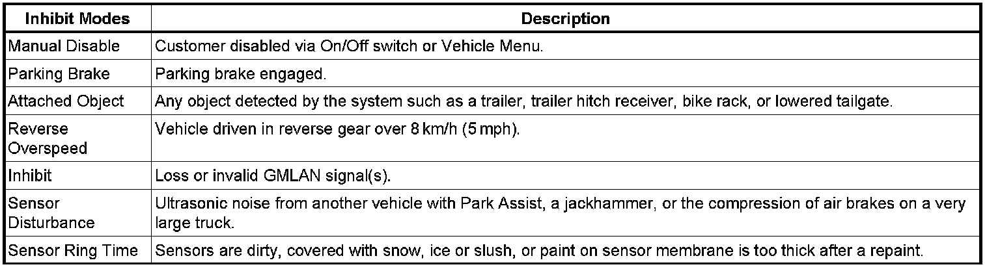

Parking Assist System - 'Park Assist Off' Message on DIC
INFORMATIONBulletin No.: 07-08-49-014A
Date: July 30, 2008
Subject:
Diagnostic Information for Park Assist Off Message on Driver Information Center (DIC)
Models:
2007-2009 Cadillac Escalade Models
2007-2009 Chevrolet Avalanche, Silverado, Suburban, Tahoe
2007-2009 GMC Sierra, Yukon Models
Supercede:
This bulletin is being revised to add the 2008 and 2009 model years. Please discard Corporate Bulletin Number 07-08-49-014 (Section 08 - Body and Accessories).
Some customers may comment that a "Park Assist Off" message is appearing on the Driver Information center (DIC) at times.

There are several factors listed above that can cause this message to appear. A Tech 2 can be used to access the latest entry into the Park Assist Module history buffer to help determine a cause.
Engineering has received multiple inhibited Rear park Assist Modules through warranty parts return with attached object stored in the latest history buffer. If a vehicle has a trailer hitch installed into the trailer hitch receiver, it is possible for the rear park assist to be disabled. Once the trailer hitch is removed, the message should go away. Other possible causes may be dirty sensors. Keep the rear bumper free of mud, dirt, snow, ice and slush.
Important:
Please note that any object that is installed in the receiver hitch, extending from the rear of the vehicle, or blocking the sensors can disable the Parking Assist, resulting in the message "Park Assist Off". Please remove the object or obstruction from the vehicle to re-enable the system. This is normal operation of the system.

Disclaimer